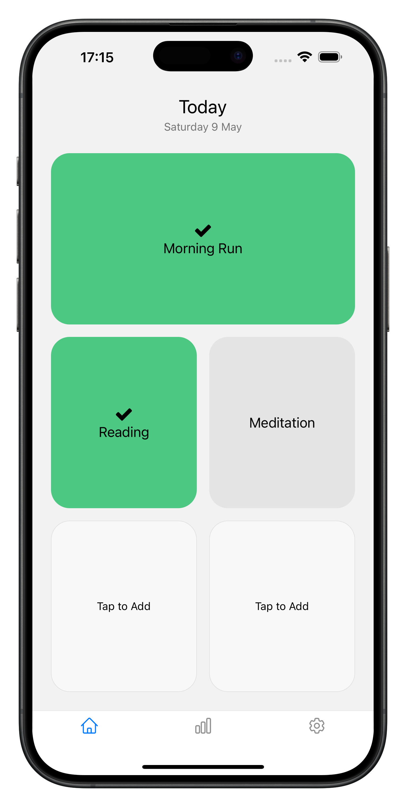
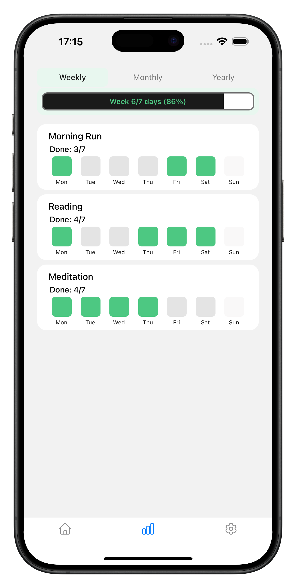
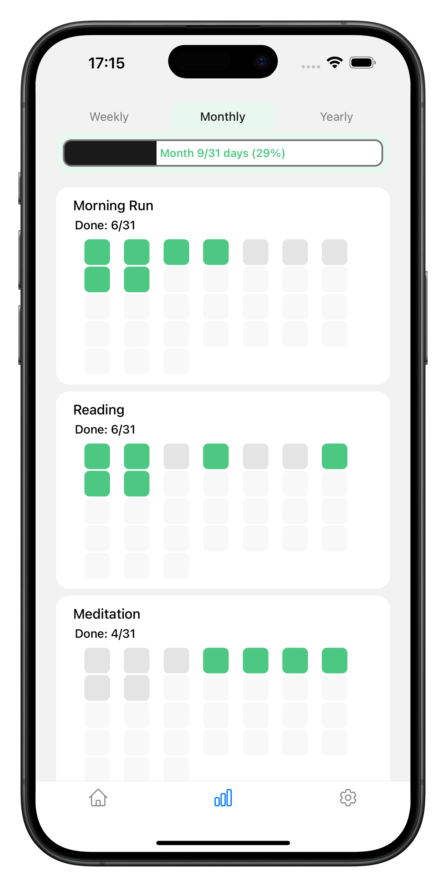
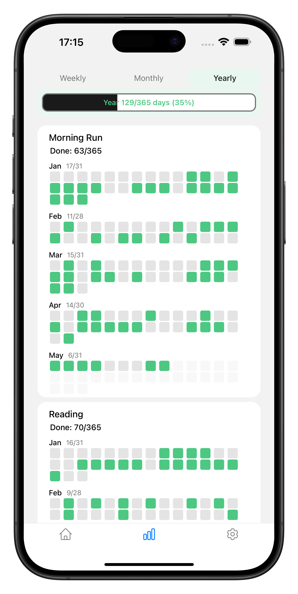

Just tap to record your habits and watch small grains stack into something real.
Download on iOS No credit card required
Just name it. No categories, no goals.
One tap marks progress. Each tap is a grain.
Weekly, monthly, and yearly views show your progress.
Everything you need. Nothing you don't.



I built Grain because I wanted the simplest possible habit tracker.
To me, building a habit comes down to two things:
lowering the barrier to start, and earning your own confidence through
daily action.
I wanted an app where each tap quietly grows into self-trust — designed
to reduce cognitive load, so you can focus on simply showing up.
If you miss a day, that's okay. Chasing perfection can quietly break the
whole thing.
Just pick it up tomorrow. Your grains are still there.